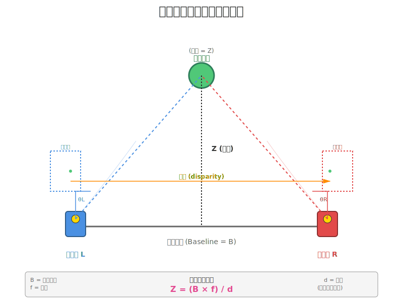

是的，但有條件！ 這是個很棒的問題，讓我詳細解釋：
✅ 基線越大的優勢：
深度精度公式：
深度誤差 ΔZ ≈ Z² / (B × f) × Δd
其中：
- Z = 測量距離
- B = 基線距離（鏡頭間距）
- f = 焦距
- Δd = 視差測量誤差（通常是固定的，約±0.5像素）

關鍵發現：基線 B 越大 → 深度誤差 ΔZ 越小 ✓
📊 實際數字比較：
假設測量 5 公尺遠的物體：
| 基線距離 | 視差值 | 深度精度 |
|---|---|---|
| 2 cm（手機） | 很小 | ±50 cm |
| 6 cm（RealSense） | 中等 | ±15 cm |
| 20 cm（專業級） | 較大 | ±5 cm |
| 1 公尺（機器人） | 很大 | ±0.5 cm |
⚠️ 但是！基線過大的問題：
1. 視野重疊減少
越遠的鏡頭 → 共同視野越小
- 近距離物體可能只被一個鏡頭看到
- 可測量的最近距離變遠
2. 遮擋問題（Occlusion）
- 基線大時，左右視角差異大
- 物體邊緣容易被自己或其他物體遮擋
- 某些區域可能無法匹配
3. 計算複雜度
- 視差搜索範圍變大
- 需要更多運算資源
- 實時性下降
4. 硬體成本
- 設備體積變大
- 校準更困難
- 運輸和使用不便
🎯 最佳基線選擇：
取決於應用場景：
近距離應用（0.3-3m）
- 最佳基線：5-10 cm
- 應用：人臉識別、AR、室內機器人
- 例子：Intel RealSense D435（5cm）
中距離應用（2-10m）
- 最佳基線：10-20 cm
- 應用：自動駕駛、無人機、室外機器人
- 例子：ZED 2 相機（12cm）
遠距離應用（10m+）
- 最佳基線：30-100 cm+
- 應用：測繪、工業檢測、衛星立體影像
- 例子：專業測量設備
📐 設計原則：
經驗法則：
基線距離 ≈ 最大測量距離 / 50
例如：
- 測量 5m → 基線約 10cm
- 測量 50m → 基線約 1m
💡 結論：
✓ 遠距離測量：基線越大越準
✗ 近距離測量：基線太大反而不好
🎯 最佳方案：根據主要工作距離選擇合適基線
這就是為什麼不同產品有不同的鏡頭間距設計！就像選擇工具一樣，沒有絕對的「越大越好」，只有「最適合的配置」。